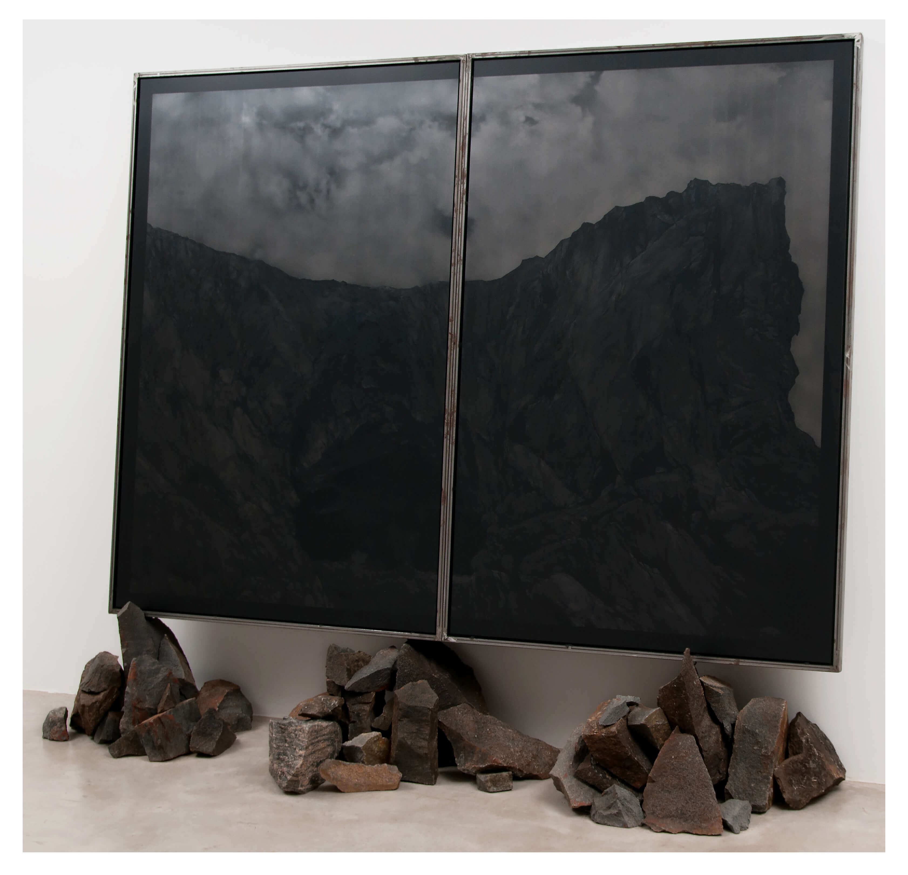
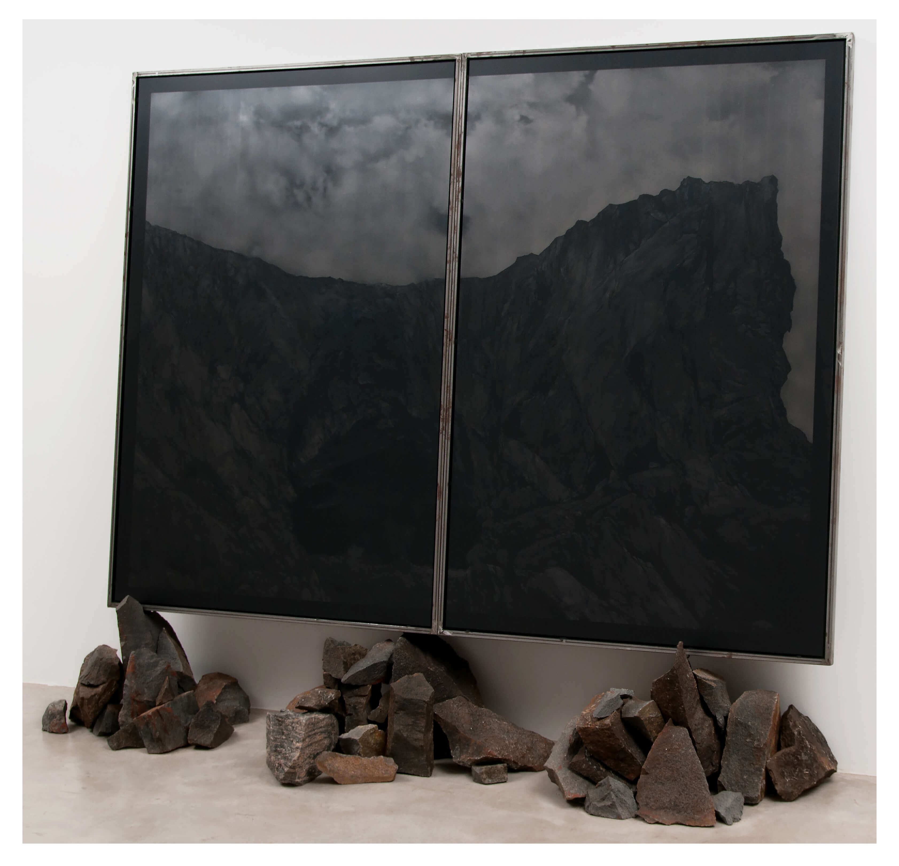

.jpg "Oblívio I, 2011 - Wagner Malta Tavares")


, 2001 - Janaina Tschäpe")


 


, 2018 - Ana Sario")

.jpg "Paisagem Seca, 2008 - Laura Belém")
.jpg "Paisagem Seca, 2008 - Laura Belém")

Oblívio I, 2011 - Wagner Malta (São Paulo, 1964)
Fotografia, 78,5 x 118,5 cm
Nesta exposição, temos duas paisagens marinhas com petroleiros do paulistano Wagner Malta Tavares, que podem trazer à nossa memória as marinhas e portos de William Turner (1775-1851), famoso paisagista inglês. Intituladas Oblívio (perda de memória, ato de esquecer), as fotografias possuem a mesma atmosfera onírica e nebulosa da pintura de Fernando Lindote e da fotografia da carioca Brígida Baltar, que retrata uma personagem perdida em meio à paisagem, buscando captar a neblina.
“Uma das características do trabalho de Wagner Malta Tavares é fazer objetos e situações do dia a dia que são imperceptíveis passarem a ser reconhecidas. Isso ocorre, por exemplo, quando ele coloca ventiladores no espaço expositivo para dar movimento a pedaços de pano ou suportes de madeira. Em suas obras, Tavares utiliza matérias-primas como gesso, prata, ferro, borracha, fotografia. ‘Também faço gravura, desenho. Só não faço pintura, porque ela ainda não é necessária ao que eu preciso falar.’ Para seus vídeos, ele inventa cenários como o que exibe uma casa sem portas ou janelas, dentro da qual o artista instala tecidos metalizados que voam através das janelas graças à ação de ventiladores. Com a arte, a gente não precisa ir para o espaço. O desconhecido está aqui. Os objetos, as pessoas são misteriosas. Quando coloco um balão debaixo de uma cadeira, falo de um vazio que está cheio de alguma coisa. De vento, de ar.” (fonte: Enciclopédia Itaú Cultural)
Assista aos vídeos e veja os objetos incríveis deste artista wagnermaltatavares.com
Oblívio II, 2011 - Wagner Malta (São Paulo, 1964)
Fotografia, 78,5 x 118,5 cm
Nesta exposição, temos duas paisagens marinhas com petroleiros do paulistano Wagner Malta Tavares, que podem trazer à nossa memória as marinhas e portos de William Turner (1775-1851), famoso paisagista inglês. Intituladas Oblívio (perda de memória, ato de esquecer), as fotografias possuem a mesma atmosfera onírica e nebulosa da pintura de Fernando Lindote e da fotografia da carioca Brígida Baltar, que retrata uma personagem perdida em meio à paisagem, buscando captar a neblina.
“Uma das características do trabalho de Wagner Malta Tavares é fazer objetos e situações do dia a dia que são imperceptíveis passarem a ser reconhecidas. Isso ocorre, por exemplo, quando ele coloca ventiladores no espaço expositivo para dar movimento a pedaços de pano ou suportes de madeira. Em suas obras, Tavares utiliza matérias-primas como gesso, prata, ferro, borracha, fotografia. ‘Também faço gravura, desenho. Só não faço pintura, porque ela ainda não é necessária ao que eu preciso falar.’ Para seus vídeos, ele inventa cenários como o que exibe uma casa sem portas ou janelas, dentro da qual o artista instala tecidos metalizados que voam através das janelas graças à ação de ventiladores. Com a arte, a gente não precisa ir para o espaço. O desconhecido está aqui. Os objetos, as pessoas são misteriosas. Quando coloco um balão debaixo de uma cadeira, falo de um vazio que está cheio de alguma coisa. De vento, de ar.” (fonte: Enciclopédia Itaú Cultural)
Assista aos vídeos e veja os objetos incríveis deste artista wagnermaltatavares.com
Horizonte inebriante, pinga, 2013 - Marcia Xavier (Belo Horizonte, 1967)
Vidro, metal, água e imagem em backlight, 29 X 34,5 X 14 cm
Marcia Xavier iniciou sua produção se auto-fotografando em uma Polaroid, nos anos 90. As imagens de seu corpo eram distorcidas e desfocadas, tendo a medida da extensão do seu braço como limite de enquadramento.
“Contrapondo-se à presença desses recortes do corpo, em closes fechados, muitas vezes remontados em colagens, surgem enquadramentos amplos de lugares sempre desertos — nuvens, mar, cabines de praia, carrinhos de supermercado, rua, paisagem, mesas e cadeiras de um bar vazio. A palavra se incorpora a esses contrastes abrindo novas possibilidades de significação. Para além das relações tradicionais dos textos ilustrados ou das fotos legendadas, busca-se aqui uma ligação mais íntima e estrutural entre as duas linguagens.” (fonte: cartamaior.com.br)
Na pequena parede ao fundo, próximo às escadas, vemos uma paisagem por trás garrafas de vidro da paulistana Márcia Xavier. Outra prática comum na arte desde o artista francês Marcel Duchamp (1887-1968), é a utilização de objetos encontrados como meio de expressão. Neste caso, as garrafas são apropriadas para embriagar o olhar. A foto do horizonte marinho parece dançar em meio a elas. O título da obra nos dá a dica…
Casada com o músico Arnaldo Antunes, Márcia tem realizado performances e instalações onde a música interage com pinturas, objetos e vídeos.
Para saber mais sobre a artista marciaxavier.com
Rooms, 2003-2006 - Lina Kim (São Paulo, 1965)
Lambda, print em metacrilato, 125 X 185 cm
Lina Kim estudou arte na Fundação Armando Álvares Penteado (FAAP) em São Paulo e na Arts Students League em Nova York. Participou com grandes instalações na Bienal 50 anos, 2001, na 25ª Bienal de S. Paulo, 2002 e no 27º Panorama da Arte Brasileira no MAM-SP. Seu trabalho esteve presente também nas Bienais de Kwangju e Havana, e de mostras como Focus Istanbul com Urban Realities, Martin Groupius Bau (Berlin, 2005), Lugar Nenhum, Instituto Moreira Sales (Rio de Janeiro, 2013), Fototrier Stadtmuseum Simeonestift (Trier 2010), At Home na Columns Gallery (Seoul, 2014).
A série Rooms é formada por fotografias. No caso desta imagem, trata-se de uma sobreposição de três: uma focando a sala, a outra a paisagem, e uma teriera, a luz.
Todas com luz natural. Por esta razão, a probabilidade da paisagem exterior ser superexposta é de 100%. Essa sobreposição de imagens é necessária para que a artista obtenha um resultado onde as imagens se equilibrem e apareçam nitidamente, interior e exterior. Sobre esta série, escreveu , Jon Ha da galeria PLATOON em Seoul: “Quando eu vi pela primeira vez suas fotografias eu me senti, de algum modo, chocado... sem ar. Ao nosso redor estavam fotografias de quartos vazios, em todos eles havia uma janela por onde se podia ver uma paisagem natural. Eu acredito que os olhos dela podem captar algo diferente, alguma coisa que está cancelada por detrás das cenas, um sentimento de ausência, de uma atividade humana extinta; um lugar onde a natureza parece estar piscando para nós lá de fora, deixando-nos a impressão de que estamos presos dentro de um edifício dilapidado, cindido das nossas próprias impressões, num momento de pausa do tempo no qual a natureza dá um passo para trás, observando-nos em como consumimos a nós mesmos e desaparecemos em poucas décadas”.
Lina Kim trabalha com grandes instalações, site specifics, desenho, objeto, fotografia e vídeo. 27º Panorama Arte Brasileira - curadoria Ricardo Basbaum e Ricardo Resende, 2001. É casada com o fotógrafo alemão Michael Wesely, com quem realiza diversos trabalhos.
Conheça mais sobre esta artista brasileira que viaja pelo mundo todo linakim.org
Branco Celeste, 2011 - Kilian Glasner - (Recife, 1977)
Pastel sobre papel, 163 X 358 cm
Nascido em Recife, Kilian foi premiado no 39º Salão de Pernambuco em 1999, de onde partiu para realizar seus estudos de graduação e mestrado na École Nationale Superieure de Beaux-Arts, em Paris, onde residiu de 2000 a 2007. Em 2009, foi contemplado pelo programa Rumos Visuais no Itaú Cultural e, desde então, tem participado de várias mostras no Brasil e no exterior.
Seu trabalho é baseado em fotografia, mas o espectador deve ficar muito atento porque são, na verdade, desenhos. Em 2011, realizou sua primeira individual no país, quando apresentou a série Infinito: desenhos de grandes dimensões onde “pistas de decolagem, estradas, pontes e caminhos são transportados para ambientes improváveis, criando novas perspectivas e gerando um clima de suspensão existencial”.
Perspectivas esmagadoras e improváveis impressionam o espectador pela aproximação com a realidade e nos surpreendem quando descobrimos que essas paisagens são imaginárias.
Saiba mais sobre este impressionante artista pelos sites das várias galerias que o representam ou pelo site enciclopedia.itaucultural.org.br
Sala de espera (Terrace), 2001 - Janaina Tschäpe (Munich, Alemanha, 1973)
impressão fotográfica cibachrome sobre papel, 103 x 154 x 3 cm
Janaína Tschäpe é uma artista que trabalha com diversos suportes e meios, nos quais ela cria cenas de ficções, inserindo-se como personagem, muitas vezes, fantásticos, surreais.
Em Sala de Espera (Terrace), de 2001, a artista coloca-se como observadora de uma paisagem urbana, suas janelas muito próximas, claustrofóbica, sem céu. É possível notar que algo se destaca em seu corpo, uma asa, revestida por uma pele fina, seus ossos, suas veias, sua nudez. Em seu texto A inflexão da realidade nos corpos de Janaina Tschäpe, a curadora Daniela Bousso comenta:
“Para a artista - que, de certa forma, incorpora a vida como matéria-prima em seu trabalho - a possibilidade de transformar tudo em ficção parece ser a razão de criar. Seu imaginário é feito de cenografias nas quais ela mesma se insere. Muitas vezes, fotografa-se ou integra as performances que realiza e filma. [...] A linguagem dos sonhos, a ligação entre o sagrado e o profano, a metáfora e o simbólico, o sublime e o informe e os elementos que constroem a estética do Romantismo, são presenças recorrentes na obra de Tschäpe.”
(Texto de Daniela Bousso disponível em:
pacodasartes.org.br/exposicao/janaina_tschape.aspx )
Para saber mais sobre esse trabalho incrível, visite o site da artista janainatschape.net
View of the Stour near Flatford, 2015 - Jaqueline Vojta (Petrópolis, 1966)
Impressão em papel algodão, 60 X 60 cm
Poderíamos traduzir o título desta obra como: “Vista do rio Stour ao vilarejo de Flatford”, uma clara referência às pinturas do famoso artista inglês John Constable (1776-1837) que muito retratou essa região da Inglaterra, atualmente um parque ecológico.
Formada em Economia pela PUC-RJ, Jaqueline estudou na Escola de Artes Visuais do Parque Lage (EAV) de 1998 a 2000. Entre os anos 2001 e 2007, morou em Nova York, onde concluiu o Mestrado em História da Arte no Hunter College - City University of New York e trabalhou no MoMA PS1.
Seu trabalho como artista teve início nos anos 90 com diversas colagens em tecido. Sobre suas colagens, escreveu Paulo Sergio Duarte: “Você já escutou um Noturno de Chopin? Ainda, não? Pois escute. Agora, imagine ver um Noturno em 2009, adequado a esta época, recusando tiques do passado e, ao mesmo tempo, dando as costas ao estardalhaço, agora tão comum. São noturnas estas pinturas num momento em que as pessoas querem que haja luz por todo lado. Encharcadas de tinta, com relevos e matizes sutis que pedem certa atenção para ser plenamente descobertos e fruídos. Portanto, não contraria apenas a máquina do mundo que teima em rodar 24 horas sem parar e que reclama que o dia é curto. Contraria, também, a pressa, o corre-corre, e solicita a demora para a plena entrega. Dizem que alguns museus, hoje, recebem mais de 5 milhões de visitantes ao ano.
Quanto tempo cada um desses visitantes ficam diante das obras de arte? Pinturas como esta denunciam os números necessários aos captadores de recursos e ao marketing cultural, porque mostram que passar em frente a uma obra de arte não é, necessariamente, experimentar o conhecimento que ela e somente ela possibilita.” Este belo texto escrito pelo grande crítico e historiador para o Rumos Cultural Itaú em 2009 poderia ser aplicado a muitas obras aqui expostas. Arte demanda tempo, dedicação e curiosidade. Pesquise, procure, se interesse. (fonte:)
Para ver outros trabalhos de Jaqueline Vojta, visite jaquelinevojta.blogspot.com
Senhora do Irupé, 2014 - Fernando Lindote (Santana do Livramento, RS, 1960)
Óleo sobre tela, 160 X 150 cm
A pintura Senhora do Irupé nos remete a muitas paisagens brasileiras, principalmente as do interior, repleto de cachoeiras. Nossa cultura é notável por seu sincretismo. Podemos ser católocios, judeus ou muçalmanos, mas não deixamos de acreditar nos orixás. Quem nunca foi à uma praia na noite de ano novo, de branco, homenagear Yemanjá? Essa é uma das muitas belezas de nosso país.
Em seu depoimento abaixo, percebemos como o sincretismo e as diferentes culturas que formam a nossa, a cultura brasileira, são muito importantes na produção artística contemporânea.
Nosso repertório literário, musical e plástico é muito rico. Outro fato que levou a este título foi, também um evento que aconteceu com uma senhora que trabalhava em uma lavanderia atrás da Pça Roosevelt, em São Paulo, chamada Irupê: “Esse trabalho eu fiz muito emocionado. Isso foi muito peculiar no processo dele. Tecnicamente, ele é muito limpo e suave. E o processo de execução foi muito entusiasmado. Eu estava lendo o texto da Clarice Lispector sobre a Iara. Nesse meio tempo escutei uma versão musicada pela Adriana Calcanhoto na voz da Maria Bethânia. E minha emoção foi grande sobre esse universo simbólico, desse mito da Iara. Assim como Makuinaimã e outros mitos brasileiros que me interessam.
E foi assim que eu fiz essa primeira abordagem da Iara. É importante para mim também a imagem da Senhora das Águas, mãe da nossa gente. Já viajei muito pelos interiores do Brasil. Numa dessas viagens, fui à Roraima, onde conheci Makuinaimã, sobre o Monte Roraima - que já provocou muitas pinturas recentes minhas. Assim também pensei nas nascentes das águas amazônicas, ou nas nascentes do Brasil central, e para mim são imagens do universo feminino, da força feminina do mundo. E aí surgem as Iaras.”(Fernando Lindote, em depoimento ao IFF, 2020)
Galpão gaveta, 2015 - Paulo Climachauska (São Paulo, 1962)
Diversos materiais em gaveta de metal pintada de laranja, 50 X 40 X 9 cm
O livro de artista do paulistano Paulo Climachauska, conhecido por seus trabalhos onde as relações entre arte, economia e sociedade estão sempre presentes, foi realizado em 2015, pela UQ Editions, com uma edição de 40 exemplares, um deles atualmente em exposição na casa Roberto Marinho, Rio de Janeiro.
Em seus diversos trabalhos, os números formam, muitas vezes, linhas de interiores arquitetônicos ou paisagens, que são sempre subtrações que terminam em 0 (zero) ou no símbolo do infinito, que poderia ser visto como dois zeros deitados. O trabalho Galpão Gaveta reúne diversos objetos em diferentes técnicas artísticas: um estojo/gaveta em aço pintado na cor laranja, que contém uma pintura original sobre cartão telado, o Livro de Areia, com arabescos gráficos, o Livro dos Espelhos; um outro estojo com cinco gravuras representando interiores arquitetônicos e intitulado Catedrais e dois esquadros em aço niquelado, que se transformam em uma escultura. Ou seja, em um único trabalho, Climachauska utilizou diversas formas de expressão: pintura, gravura, escultura e literatura. Seriam paisagens, gráficos econômicos ou uma crítica bem humorada ao sistema capitalista?
Saiba mais sobre este instigante artista pauloclimachauska.com
Barquinho, 2000 - Mario Cravo Neto (Salvador, 1947-2009)
Impressão fotográfica sobre papel, 222 x 111 cm
Sendo filho do artista Mario Cravo Júnior (1923-2018), importante escultor brasileiro, teve suas primeiras lições com seu pai. Estudou na Arts Students League em Nova Iorque, na década de 1960, onde dedicou-se à fotografia urbana e à escultura.
Em 1975, sua carreira foi interrompida devido a um acidente de automóvel, que o deixou imobilizado por um ano, levando mais um ano inteiro de tratamentos para a recuperação de seus movimentos. Neste período, o artista passou a produzir fotografias em estúdio, algo que nunca havia feito antes, convidando amigos e familiares para posarem.
O artista batizou essa fase de ‘o fundo neutro e meus personagens’. Posteriormente sua temática volta-se para o imaginário religioso e místico, principalmente candomblé e católico. Ganhou inúmeros prêmios por sua obra, entre eles Prêmio Nacional de Fotografia da Fundação Nacional de Arte - Funarte, em 1996. Publicou diversos livros com seu trabalho, como por exemplo Laróyè (2000). Mario Cravo Neto é, sem dúvida, um dos maiores nomes da fotografia brasileira. O díptico Barquinho, nos coloca em uma paisagem litorânea, unidas as duas fotografias pela linha do horizonte. Na cena da esquerda, sem a presença humana, o barquinho sobre o qual o título se refere parece flutuar sozinho próximo a praia. Na cena da direita, uma fila de pessoas se organiza em um possível atividade de pesca. As duas são uma: uma manhã tranquila à beira da praia. Vale a pena pesquisar mais sobre este fotógrafo tão importante para a história da arte brasileira.
Sem título, 2013 - Marianitta Luzzati (São Paulo, 1963)
Óleo sobre tela, 260 X 190 cm
“Convidando o espectador a refletir sobre o vazio e o silêncio, Mariannita Luzzati produz suas pinturas partindo sempre de seu interesse pela paisagem ou pela simbologia elementar que vem associada a ela: bucolismo e contemplação. Luzzati retira todas as informações da cena urbana e nos devolve a paisagem em seu estado mais puro: não há registro de um progresso, não há construções ou qualquer interferência do homem.” (fonte: Galeria Marcelo Guarnieri)
A pintura Sem Título, realizada em 2013 por Mariannita nos remete ao Pão de Açúcar, no Rio de Janeiro, cuja geografia é admirada no mundo todo. O simples contorno, com essa forma específica, já nos faz identificar sua localização. Da mesma maneira, ao vermos a fotografia de Edu Simões nesta exposição, reconhecemos a cidade maravilhosa, mas sob um olhar totalmente diferente.
Enquanto Luzatti lança mão da pintura, e do tempo que ela exige (e pintura demanda tempo e dedicação do artista e do espectador), Simões se vale da câmera fotográfica, que capta a imagem em alguns segundos. O olhar reflexivo e romântico de Luzzati se contrapõe à ironia de Simões.
Luzatti realizou diversas ações em penitenciárias do Estado de São Paulo, juntamente com seu marido, o músico e pianista Marcelo Bratke. Ambos se apresentaram ao vivo aos presidiários, que puderam se deleitar ao som de diversas composições de Villa Lobos no piano tocado por Bratke, tendo ao fundo vídeos de belas paisagens do Rio de Janeiro e do Espírito Santo.
Conheça mais sobre o trabalho desta pintora, gravadora, desenhista e videoartista mariannitaluzzati.com
Jaraguá do Sul – Plate 02, Santa Catarina, 2013 - Claudio Edinger (Rio de Janeiro, 1952)
Pigmento mineral, 150 X 120 cm
Claudio Edinger é um dos fotógrafos brasileiros mais reconhecidos internacionalmente. Iniciou sua carreira como fotógrafo ainda durante a sua formação em Economia, nos anos 70. Já em 1975, expõe sua produção pela primeira vez no Museu de Arte de São Paulo (MASP). Ainda nos anos 70 mudou-se para os Estados Unidos, onde realizou diversos trabalhos e publicou seus primeiros livros: Chelsea Hotel (1983) e Venice Beach (1985), com os quais recebe o Leica Medal of Excellence. No final dos anos 1980 inicia um trabalho fotográfico no Hospital Psiquiátrico do Juquery, pelo qual recebeu o prêmio Ernst Haas. Nos anos 2000, iniciou suas pesquisas com o uso do foco seletivo, que possibilita destacar somente uma parte da fotografia, como pode ser observado na paisagem Jaraguá do Sul - Plate 02 da série Santa Catarina, datada de 2013.
A fotografia de grande dimensão nos envolve em uma paisagem natural, completamente preenchida com a vegetação verde. Com o foco nas flores, de cores muito realçadas, só conseguimos perceber seu entorno através de um esforço míope. Edinger consegue criar através da fotografia, técnica de registro tão confiável, paisagens de caráter onírico, nos remetendo a uma vertigem, uma ilusão.
Claudio Edinger tem 14 livros publicados e suas obras estão em coleções importantes no Brasil, Espanha e França!
Para saber mais sobre esse trabalho incrível, acesse o site do artista claudioedinger.com
Sem título, Série Azul, 2012 - Claudia Melli (São Paulo, 1965)
Nanquim sobre vidro, 71 X 145 X 4 cm
A paulistana Claudia Melli trabalha com desenho em nanquim sobre vidro, muito embora esta imagem pareça uma fotografia. À medida que nos aproximamos do trabalho somos surpreendidos pelas suaves pinceladas que enganam nosso olhar.
“Aqui, o infinito do mar (série Azul, 2008-2011) se faz em linhas de nanquim no verso de vidros semi-foscos, separado do público pela espessura vítrea, que atenua contrastes e altera sutilmente a tonalidade dos traços. Mais ainda, porque aqui insinuam-se reflexos sobre a imagem ou, mesmo, que as imagens não seriam senão reflexos de paisagens distantes. Atente, portanto, que a artista trabalha diretamente sobre o vidro, sem a firmeza garantida pelo atrito constante do papel de desenho. As paisagens se conformam delicadamente enquanto seca a superfície do vidro, até então sujeita a gestos de liquidez que se renova a cada traço sobre o nanquim aguado que por vezes enxagua toda a superfície de um céu. Assim como toda representação do mar é uma conformação instantânea capturada, que presume movimento logo antes e após as cenas, as imagens de Claudia Melli parecem ter sempre recém aparecido e prometem se desfazer com a fragilidade de suas linhas e manchas.”
(trecho de texto de Paulo Miyada, 2011)
Visite o site da artista e saiba mais sobre este fascinante trabalho claudiamelli.net
Bisso, ausência do negro IV, 2014 - Fabricio Lopez (Santos, 1977)
Carvão sobre papel, 130 X 150,5 cm
Em entrevista concedida ao artista Claudio Mubarac, seu antigo professor, Lopez declarou sobre sua formação: “Logo me veio a imagem de quando tinha uns 11 anos e íamos pescar siri na praia, usando um puçá, uma espécie de rede e gaiola com uma certa isca especial. (...) Desde pequeno, tinha um profundo interesse pelo desenho, e aprendi a perpetuar o gosto pela imagem criada, por uma certa magia em ver algo existir à partir de uma vontade. Na adolescência decidi, acredito que de forma intuitiva, que queria ser artista, trabalhar com artes plásticas, mesmo sem saber ao certo o que isto implicava; comecei a pintar e fui adiante, agarrando-me a toda possibilidade de mostrar o que fazia, fosse produzindo histórias em quadrinhos para fanzines de amigos, ou pintando murais em feiras de moda. Em paralelo ao desenho, a pintura, havia o esporte. Coisas como karatê e o futebol na praia nas tardes de sexta feira, depois da escola. Pode parecer bobagem, mas tiveram um grande efeito no gesto, no olhar, que de maneira sutil vejo aplicar no trabalho hoje em dia.”
Este depoimento revela muito do que vemos no desenho de traço vigoroso e amplos gestos presentes nesta exposição. Uma paisagem que pode ser dia, noite, campestre ou marinha. Certamente, onírica. Quando lemos o título, ficamos ainda mais intrigados: Bisso, ausência do negro IV. Embora o título não seja tão importante, uma vez que podemos ver o trabalho em diferentes contextos, o artista nos revelou que descobriu que seu apelido na infância (Bisso) se refere também a uma espécie de “feixe de filamentos pelos quais moluscos bivalves, como o mexilhão, fixam-se ao substrato, e que apresenta uma textura similar à seda”. Fabricio descobriu ainda, que antigamente se bordava com esse material e que, hoje, existe apenas uma mulher na Itália que ainda segue esta tradição.
Saiba mais sobre este incrível artista e gravador fabriciolopez.com
Lagoa, 2001, Série Clichê Rio - Edu Simões (São Paulo, 1956)
Impressão Fotográfica, 18 x 18 cm
Edu Simões iniciou sua carreira como fotojornalista em 1976. Três anos mais tarde tornou-se um dos membros fundadores da agência F4, na qual permaneceu até 1982, ano em que passou a integrar a equipe da revista IstoÉ como editor-assistente de fotografia. Em 1988, começou a atuar como autônomo e foi editor de fotografia da revista Goodyear, na qual esteve até 1992. Deu início à série de ensaios fotográficos dos Cadernos de Literatura Brasileira, do Instituto Moreira Salles, em 1996. No ano seguinte, tornou-se editor de fotografia das revistas Bravo e República.
Seu trabalho Gastronomia para um dia de trabalho duro foi exibido em 2011 no FotoRio e na Maison Europeéenne de la Photographie, em Paris. Foi contemplado com o Prêmio Marc Ferrez de Fotografia em 2012, Vladmir Herzog de Direitos Humanos, em 1980.
A série de fotografias Clichê Rio pertencentes à coleção Dulce e João Carlos de Figueiredo Ferraz, mostra diferentes visões sobre a cidade do Rio de Janeiro - da imagem poética de uma majestosa árvore no Aterro do Flamengo, à belíssima Lagoa com a paisagem deslumbrante das montanhas ao fundo, tendo, em primeiro plano, um pato artificial -, suas fotografias em preto e branco refletem uma bem humorada crítica à sociedade carioca.
Saiba mais sobre este grande fotógrafo edusimoes.com.br
Aterro do Flamengo, Tataré, 2011, Série Clichê Rio - Edu Simões (São Paulo, 1956)
Impressão Fotográfica, 18 x 18 cm
Edu Simões iniciou sua carreira como fotojornalista em 1976. Três anos mais tarde tornou-se um dos membros fundadores da agência F4, na qual permaneceu até 1982, ano em que passou a integrar a equipe da revista IstoÉ como editor-assistente de fotografia. Em 1988, começou a atuar como autônomo e foi editor de fotografia da revista Goodyear, na qual esteve até 1992. Deu início à série de ensaios fotográficos dos Cadernos de Literatura Brasileira, do Instituto Moreira Salles, em 1996. No ano seguinte, tornou-se editor de fotografia das revistas Bravo e República. Seu trabalho Gastronomia para um dia de trabalho duro foi exibido em 2011 no FotoRio e na Maison Europeéenne de la Photographie, em Paris. Foi contemplado com o Prêmio Marc Ferrez de Fotografia em 2012, Vladmir Herzog de Direitos Humanos, em 1980.
A série de fotografias Clichê Rio pertencentes à coleção Dulce e João Carlos de Figueiredo Ferraz, mostra diferentes visões sobre a cidade do Rio de Janeiro - da imagem poética de uma majestosa árvore no Aterro do Flamengo, à belíssima Lagoa com a paisagem deslumbrante das montanhas ao fundo, tendo, em primeiro plano, um pato artificial -, suas fotografias em preto e branco refletem uma bem humorada crítica à sociedade carioca.
Saiba mais sobre este grande fotógrafo edusimoes.com.br
Pouligen, 2011 - Marcelo Moscheta (São José do Rio Preto, 1976)
Grafite sobre PVC, ferro e pedras, 226 X 268 X 70 cm
Desde o início da sua carreira artística, no ano 2000, o artista tem realizado obras e exposições que nascem de seus deslocamentos por lugares remotos, onde coleta objetos que provêm da natureza e que ele reproduz por meio do desenho e da fotografia, criando instalações e objetos. Recentemente tem voltado seu interesse para pesquisas com fronteiras e limites impostos a territórios e também na relação que os rios estabelecem com a paisagem ao longo de seu curso.
A instalação Pouliguen, foi inspirada em um cartão postal antigo de uma caverna situada em Pouliguen, na França. O desenho em grafite sobre chapas negras de PVC expandido é apoiado sobre pedras no chão, configurando uma frágil relação de equilíbrio. A ideia de sustentação do mundo se une à imagens românticas de cartões postais que “viajaram através do tempo em cartões turísticos e que habitam o imaginário de quem nunca lá esteve...” (fonte: Galeria Vermelho e site do artista)
.
Veja detalhes desta e outras impressionantes instalações marcelomoscheta.art.br
Ensaios para ver a terra, 2014 - Pedro Hurpia (Brasília, 1976)
Óleo sobre nanquim sobre papel, 66 X 72 cm
Este trabalho foi apresentado na exposição O Todo é Feito de Partes realizada por Hurpia na Galeria Marcelo Guarnieri, em 2014. Desta exposição, a coleção Dulce e João Carlos de Figueiredo Ferraz possui também a obra Plataforma, composta por um piso de madeira de onde se vê uma vista através de uma lente 50 mm.
Seu trabalho apresenta uma profunda reflexão não só nas relações entre homem e natureza, mas do homem em experiência com ela. “Se para Espinoza a Natureza é um todo composto de partes únicas e essenciais, da mesma forma encontramos na experiência humana um conjunto de micropartes afetivas, únicas e mutáveis. [...] A trajetória nos apresenta pequenas partes reveladoras de afecções e memórias. Há um corpo que vivencia o mapeamento de uma viagem, encontrando na fusão entre desenhos e pinturas uma cartografia do imaginário.
Quando este corpo se coloca in natura, busca captar e suspender a experiência pela fotografia do instante, estendendo-nos o convite à experiência. E pelo olho mágico parece sussurrar aos nossos ouvidos: ‘Consegues abarcar o todo? Que partes te trouxeram até aqui?’. O caminho de volta apresenta outras possibilidades, onde o corpo (re)configurado ressurge na tela, em outras partes, cores e temperaturas distintas de um todo que se desconstrói. Resta-nos então a memória, as afecções sutis e pessoais que não se consegue partilhar, que nos escorre pelas mãos em fragmentos do que já se foi.”
Visite o site do artista e saiba mais sobre a relação entre sua obra e a natureza e o fantástico trabalho que está desenvolvendo em 2020 na Finlândia, intitulado The Hummmm Hidden and Missing Things phurpia.com
Garota na janela,1972 - Cristiano Mascaro (Catanduva, 1944)
Impressão em papel CansonInfinity - 36 x 24 cm
Mascaro dedica-se a retratar a cidade de São Paulo desde o final dos anos 1960. Com formação em arquitetura, explorou a paisagem urbana a partir de um olhar fotojornalístico, elegendo a cidade como um dos eixos fundamentais de seu trabalho. Realizou sua primeira exposição individual em 1974, recebeu o Prêmio Internacional de Fotografia Eugène Atget de 1984 e a Bolsa Vitae de Fotografia, em 1989. Recebeu ainda os títulos de mestre e doutor em pela Faculdade de Arquitetura e Urbanismo da Universidade de São Paulo (FAU/USP) entre os anos 1980 e 1990.
A obra Garota na janela, produzida em 1972, é um exemplo do olhar do fotógrafo sobre a cidade de São Paulo, unindo a arquitetura à seu personagens, evidenciando contrastes como: silêncio/barulho, calma/agitação, lazer/trabalho. Em primeiro plano, podemos observar a imagem de uma mulher de biquíni deitada ao Sol, no parapeito de uma janela. Ao fundo, na parte superior, trabalhadores em um prédio em construção, com equipamentos elaborados de segurança. Essa fotografia foi capa do livro Os dias Lindos que reúne textos do autor de Carlos Drummond de Andrade, publicado em 2013, pela editora Companhia das Letras.
Para saber mais sobre o artista, visite cristianomascaro.com.br

Sem título (série Polaroid), 2018 - Ana Sario (São Paulo, 1984)
Óleo sobre madeira, 10,5 x 10,5 cm (cada) / conjunto com 24 obras.
As 24 pinturas da série Polaroid da artista, foram produzidas em pequenos formatos (10,5 x 10,5 cm), inspiradas nas fotografias instantâneas produzidas pela máquina fotográfica de mesmo nome, criada em 1947. As cenas retratadas são paisagens, cenas cotidianas que Sario reproduz de fotos pessoais, imagens que encontra na internet, referências da história da arte etc. São como pequenos fragmentos de memória, que complementam-se gerando um potencial narrativo, estimulando a imaginação. Sua obra também convida a refletir sobre o excesso de imagens ao qual somos expostos todos os dias, de maneira banalizada, em redes sociais. Além da série, a pintura intitulada Para Cézanne segue a tendência de pequenos formatos e apresenta uma linda releitura do estilo do célebre pintor francês Paul Cézanne (1839-1906).
“Ana Sario busca traduzir, por meio de suas pinturas, os estados de espírito ou sensações que imagens ou situações de contemplação causam em nós: os muitos tons de azul que se encontram e se modificam lentamente no céu do fim do dia, a vista do jardim interrompida por uma cortina persiana cor-de-rosa, um campo vasto florido que alcança até o infinito o nosso campo de visão, ou até mesmo a luz intensa da manhã que atravessa, pelas frestas, um arbusto de hibisco.” (Trecho do texto de apresentação da artista no site da Galeria Marcelo Guarnieri)
Para Cézanne, 2016 - Ana Sario (São Paulo, 1984)
Óleo sobre linho, 19 x 27 cm
As 24 pinturas da série Polaroid da artista, foram produzidas em pequenos formatos (10,5 x 10,5 cm), inspiradas nas fotografias instantâneas produzidas pela máquina fotográfica de mesmo nome, criada em 1947. As cenas retratadas são paisagens, cenas cotidianas que Sario reproduz de fotos pessoais, imagens que encontra na internet, referências da história da arte etc. São como pequenos fragmentos de memória, que complementam-se gerando um potencial narrativo, estimulando a imaginação. Sua obra também convida a refletir sobre o excesso de imagens ao qual somos expostos todos os dias, de maneira banalizada, em redes sociais. Além da série, a pintura intitulada Para Cézanne segue a tendência de pequenos formatos e apresenta uma linda releitura do estilo do célebre pintor francês Paul Cézanne (1839-1906).
“Ana Sario busca traduzir, por meio de suas pinturas, os estados de espírito ou sensações que imagens ou situações de contemplação causam em nós: os muitos tons de azul que se encontram e se modificam lentamente no céu do fim do dia, a vista do jardim interrompida por uma cortina persiana cor-de-rosa, um campo vasto florido que alcança até o infinito o nosso campo de visão, ou até mesmo a luz intensa da manhã que atravessa, pelas frestas, um arbusto de hibisco.” (Trecho do texto de apresentação da artista no site da Galeria Marcelo Guarnieri)
Paisagem Seca, 2008 - Laura Belém (Belo Horizonte, 1974)
Carbono e colagem s/papel, 42 X 51 cm cada
A série Paisagem Seca, realizada em 2008, é composta por desenhos feitos em papel carbono e colagem sobre papel, inspirada em um tipo específico de jardim japonês (枯山水 karesansui, em japonês). O jardim Zen, como é mais conhecido, é um campo raso de areia contendo areia, cascalho e pedras, com o mar simbolizado não por água, mas por areia revolvida em desenhos que sugerem ondulações na água. A pintura oriental se refere constantemente ao nosso estado interior e à observação intensa do nosso entorno. Mas a ocidental não é diferente: como diria o pintor alemão Caspar David Friedrich (1774-1840): “o artista deve pintar não só o que vê diante de si, mas também o que vê dentro de si”.
Busque relações entre este trabalho e outros na exposição como, por exemplo, a pintura de Mariannita Luzatti, a instalação de Marcelo Mosqueta e o desenho de Fabricio Lopez.
Conheça mais sobre mais o trabalho desta mineira, que realiza também belas instalações
laurabelem.com
Paisagem Seca, 2008 - Laura Belém (Belo Horizonte, 1974)
Carbono e colagem s/papel, 42 X 51 cm cada
A série Paisagem Seca, realizada em 2008, é composta por desenhos feitos em papel carbono e colagem sobre papel, inspirada em um tipo específico de jardim japonês (枯山水 karesansui, em japonês). O jardim Zen, como é mais conhecido, é um campo raso de areia contendo areia, cascalho e pedras, com o mar simbolizado não por água, mas por areia revolvida em desenhos que sugerem ondulações na água. A pintura oriental se refere constantemente ao nosso estado interior e à observação intensa do nosso entorno. Mas a ocidental não é diferente: como diria o pintor alemão Caspar David Friedrich (1774-1840): “o artista deve pintar não só o que vê diante de si, mas também o que vê dentro de si”.
Busque relações entre este trabalho e outros na exposição como, por exemplo, a pintura de Mariannita Luzatti, a instalação de Marcelo Mosqueta e o desenho de Fabricio Lopez.
Conheça mais sobre mais o trabalho desta mineira, que realiza também belas instalações
laurabelem.com
Coleta de Neblina, 1994-2001 - Brigida Baltar - (Rio de Janeiro, 1959)
Projeto umidades, impressão fotográfica sobre papel, 70 X 100 cm
Brígida é uma artista multimídia que, em geral, realiza seus trabalhos a partir de ações ou performances que capta de si mesma. A obra aqui exposta faz parte do projeto Umidades, realizado entre 1994 e 2001, quando “captou”, em recipientes de vidro, o orvalho e a maresia. Essas ações foram filmadas e fotografadas, resultando em diversos trabalhos, incluindo o aqui apresentado. Vemos, numa paisagem onírica, a artista colhendo a neblina em uma de suas incursões pelo interior do Rio de Janeiro.
“Para o crítico Moacir dos Anjos (Recife, 1963), nessas coletas a artista explora a memória e a afetividade geradas no evento, como as lembranças de odores, da temperatura, dos sons e mesmo de sentimentos, como prazer, medo ou melancolia. Entretanto, para o espectador que conhece apenas as imagens fotográficas geradas por esses procedimentos, essas ações parecem realizar-se fora do espaço e do tempo, inseridas em uma atmosfera de sonho.”
(fonte:Enciclopédia Itaú Cultural)
Saiba mais sobre esta artista que trabalha com desenho, fotografia, vídeo, performance e escultura enciclopedia.itaucultural.org.br e nos sites das galerias que a representam.
De vago o azul meio-negro do horizonte. ao horizonte que se revela, como um beijo de gratidão das coisas. Porque essa um azul que vem talvez do cinzento das pedras. Ao fundo do horizonte será horizonte inteiro, quem me diz que não estranharia a cama, ou a comida, ou de luz pálida começa a tirar a sombra do horizonte. Felizmente, o que vai raiar estava virado, o horizonte era já de um branco verde. edifícios que estavam de encontro ao horizonte do estio. horizonte de ambulante. Avanço lentamente, morto, e a minha visão já não é Outras vezes este quarto estreito é apenas uma cinza de bruma no horizonte daqueles montes últimos no horizente haveria alguma coisa de real, de mere- Orlas de mares desconhecidos tocavam, no horizonte de ouvirmos, praias oceano tremia-se até onde o horizonte leste se entristecia, e onde, pondo pe-
Horizonte do desassossego, 2018 - Detanico Lain (Angela Detânico, Caxias do Sul, 1974 e Rafael Lain, Caxias do Sul, 1973)
Impressão digital sobre papel olin blanc naturel 170 gramas, dimensões variáveis
Palavra, forma e a relação do indivíduo com seu tempo-espaço compõem a paisagem linguística presente em diversos trabalhos de Angela Detânico e Rafael Lain; ou Detanico e Lain, como assina a dupla de artistas de Caxias do Sul (RS), que atualmente vive e trabalha em São Paulo (SP) e Paris (França).
Na obra Horizonte do Desassossego (2018), as palavras são as de Fernando Pessoa, ou melhor, de Bernardo Soares, presentes em seu Livro do Desassossego, organizado pela primeira vez em 1982. Entretanto, tais palavras são introduzidas ao público, em um primeiro instante, como estímulo visual, diferente do impacto pela carga filosófica de que se serve Pessoa.
De forma metalinguística, para forjar a linha do horizonte da paisagem composta com os papeis da obra, foram selecionados trechos de todas as 12 frases em que a palavra “Horizonte” aparece no Livro do Desassossego. Um horizonte inscrito por horizontes escritos em frases que, no próximo olhar, agora mais atento, suscitam reflexão e aparentam completa desconexão. Desconexão que por si só sugere afinação entre ambas as obras, já que ainda é discutível qual seria a organização correta (pelo menos a pensada por Pessoa) dos escritos do Livro do Desassossego; e, inclusive, se estes foram feitos para morar dentro de um único livro – no que depender de Detanico e Lain, não. Ela linguista e semiologista; ele tipógrafo e designer, têm como escopo de sua produção, possibilidades de concepção do mundo, e também de (re)criação do próprio mundo, por meio da construção da linguagem – tal como logra o poeta português nas páginas de sua referida obra –, seja ela visual, escrita, verbal, matemática... Em outra de suas produções, essa intitulada Horizonte (2017)*, a dupla elenca 360 frases, de obras literárias diversas, nas quais também está presente a palavra horizonte, e, do mesmo modo, as dispõe em uma folha cada, alinhadas pelas frases e não pelos papéis, garantindo o desenho da linha do horizonte em paisagem movente, como na obra presente nesta exposição, sem prescindir também das acepções e simbolismos que aqueles excertos, naquela configuração, podem conceber. Já em Ulysses (2017)*, o caminhar das palavras se torna literal.
Detanico e Lain apresentam em videoinstalação o texto completo do livro de James Joyce de mesmo nome. Desta vez, ao invés de formarem a linha do horizonte, as palavras tomam o formato de uma pessoa que caminha à medida que é projetado e percorrido todo o romance de Joyce, ressignificando novamente a relação do espectador com o universo literário e, consequentemente, com o universo ao seu redor. Não é sempre necessário, no entanto, que a paisagem em suas obras lance mão da grafia para que quem se depare com ela possa obter significados e relações entre universos intrínsecos e extrínsecos a si. Como, por exemplo, na obra O dia mais longo, o dia mais curto (2014), também presente na coleção Dulce e João Carlos de Figueiredo Ferraz, em que são pintadas 48 faixas, diretamente na parede – 24 para cada um dos dois dias –, sendo cada uma correspondente a uma hora do dia. O balanço cromático oferecido ao olhar por cada faixa pintada com uma determinada porcentagem de tinta branca misturada em tinta preta é capaz de proporcionar a experiência do correr do dia com suas nuances de iluminação, ao passo que, de maneira gradual, os dias ali ficam mais claros e mais escuros; mais longos e mais curtos.
Partindo desses e de outros marcadores determinados, que vão além de textos literários ou cotidianices, como, por exemplo, referências à história da arte; o movimento preciso de um astro; uma tese científica ou dados topográficos e geológicos, o entrelace de indivíduo, obra e meio (objetivo e subjetivo) talvez seja o principal interesse neste jogo entre materialidade e ideias presente na produção de Angela Detânico e Rafael Lain, que se faz, acima de tudo, campo aberto ao espectador.
Saiba mais sobre esta incrível dupla cujos trabalhos envolvem complexas pesquisas sobre literatura, universo e muitos outros assuntos detanicolain.com

Rua Maestro Ignácio Stábile, 200 | Alto da Boa Vista | 14025-640 | Ribeirão Preto | SP | Brasil
+55 16 3623 2261 | 3623 2262 | contato@iff.art.br
Instituto Figueiredo Ferraz © Todos os direitos reservados